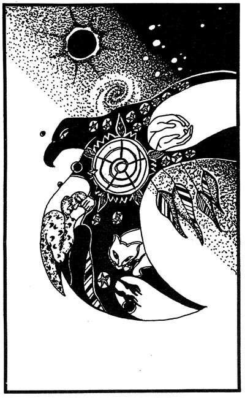

Carl Jung prophesized that the only chance our civilization has for avoiding nuclear holocaust is if enough individuals can stand the tension of opposites in themselves (Hannah, 1981, p.8); if we can, effectively, take responsibility for our dreams and inner lives. To most people living in our extraverted, materialistic father-culture1 such a notion may sound strange, mad, or simply irrelevant. What powers can we find in our dreams which could help us overcome the dark momentum generated by military and political superstructures - those forces which "wield the powers of darkest hell and shake the land"? (Pearne, 1970)
Before we write off Jung's vision as out-of-touch wishful thinking, let us stay open to the possibility that he may be absolutely right: that taking responsibility for our dreams and our tension toward wholeness moves us in the direction of integration, healing, and a sense of universal connectedness and sacrality. Conversely, repression or denial of our dreamworlds (along with its psychic analogue--the devaluation and invalidation of the feminine universe) moves us toward isolation, fragmentation, devitalization, and violence born of impotence and estrangement.
In writing this article I am responding to a cluster of dream experiences which have been acting upon me for some time. Like water on stone, they have sculpted within me a shape of experience, a set of concerns. These concerns center around my coming to understand the nature of the collective consciousness which seems to be impelling us toward nuclear confrontation. By 'collective consciousness' I am referring to our 'official' story, our authorized, consensual understanding of ourselves and our world. It is the ground of our self justification. It is our collective reality frame which structures our modes of perception and which screens out data which is non-congruent with, or injurious toward, our official reality. It is very difficult to step outside of this frame of reference, yet it seems vital that we find ways of doing so if we hope to restructure the course of world events toward the preservation of our planet.
It is only through a change of consciousness that the world will be 'saved'. Everyone must begin with himself. Political action, social work, this 'ism', that 'ology', are incomplete, futile actions unless accompanied by a new and elevated mode of awareness... the true revolution is revelation (White, 1972, p.ix).
I believe our dreams provide a powerful vehicle of revelation in helping us differentiate from the prevailing collective consciousness.
This paper represents an extended meditation on Jung's prophesy and a sharing of dreams, some personal revelations, which seem to speak to our present political situation. Since dreaming happens within a cultural context, I would like to place my dream experience within this context: I am living in a country which until fairly recently was inhabited and tended primarily by dream cultures who had cultivated dream realities to a degree that we can barely comprehend from our mythically impoverished and nature-depleted viewpoint and experience. In the attempt to systematically destroy these cultures our 'patriarchal culture of conquest' has destroyed much of our inner grounding as well as our capacity for tending and preserving the natural world. I hope to sketch for you the nature of dream consciousness among the Native cultures of this country and trace the loss of this dream grounding after the arrival of white colonizers. This loss involves the oppression of a worldview - a condition of the heart - which we must recover to some degree if we hope to regain our balance with the natural world. It is my hope that we may yet recover sacred ground - inner and outer - which Jung saw as the only hope for our survival.
Dream Sharing
Every dream must come from a place where that dream is true. -Brothers of the Grape
I am writing a book. The first line appears to me: "The red moon hung suspended in the black jungle sky."
Several months later I am reading Nor Hall:
There are times when only scattered individuals feel the imperative of change and times when the sights of a people are shaped by fear of the end of life as they know it. In such emergency times, symbolized by the reddening of the moon and blackening of the sun (Acts 2), lives take on another charge (1980, p.167).
There is fear of war in everyone. I meet an old man who is especially tuned-in to war energy. We're on the easternmost edge of the U.S. The beach we play on will be destroyed if war comes. The old man who intuits war is dying. His wife is heartbroken. I hear my daughters playing and laughing in the depths of grandmother's house. They are in rooms beneath the basement. Outside: endless expanse of cornfields. Now I am watching a plane with U.S. as its logo fly very high in steep, rapid ascent. When it reaches its zenith it stalls and crashes to earth in flames. People try to flee the disaster, but few escape. A huge suburban elementary school houses a nuclear reactor. I am in a board meeting with the principal and and inner circle of loyal staff including the principal's brother who runs the reactor. I feel totally out of place here. I'm on a dangerous mission. I need to confront and sabotage the power structure. It's a big lie. The meeting is a patriarchal gathering. After the meeting a few people are invited to dinner with the principal. He calls them "the larger majority." I say jokingly, "I'm not fat enough to belong to the larger group." I have to pass as one of them, but I must subvert them and their nuclear danger. I see expensive desks; I see small children of affluent parents. In spite of their wealth, they're going to be exposed to radiation. It's a crooked, rigged game. Now I'm at one end of a large pipe or tunnel. A large ball of string is run through the pipe at high velocity. I'm to catch it. I'm a workman on this project. I catch it and hold it in place (like a plumb line run horizontally.) A group of people start doing a ritual dance along the string. It's a mechanical, zombie, dead energy movement. I see that the spiritual, artistic, and connective energy is dead here. I have an impulse to do a live-energy dance. I see myself dancing with one of the dead-people with my passion, humor, and consciousness wide open. I know I'd be found out, seen as different, suspicious, dangerous to the social order. I know I'd be harmed. Now I'm writing with an orange and white ball point pen which has come from inside the nuclear reactor. I realize I'm contaminated. It's weird: I can't see or feel it, but I'm in a death field of radiation. I still have to complete my mission: confront the patriarchal nuclear power structure by telling the truth.
The Dream Crier
The Lakota still believe firmly in the efficacy of the vision quest, a ritual fasting and sacrifice through which contact is made with the dream world and the spirit selves of the other realm. -Arthur Amiotte, "Our Other Selves"
Before the arrival of European explorers and colonizers, what we now call America was inhabited by land and water based dream cultures who had lived here 30,000 years or more and who had developed over 2,000 languages and major dialects - more than existed in Europe and Asia combined at that time (Georgakas, 1973,p.ix). While the cultural diversity of these peoples was enormous, the common thread which characterized their worldviews was a deep respect for and identification with the sacrality of all life. All life-forms (in both the waking and dreaming states of existence) shared equal validity, equal ontological weighting. The prevailing spiritual aesthetic was roundness and union with all life energies. Black Elk, an Oglala Sioux holy man, tells us:
You have noticed that everything an Indian does is in a circle, and that is because the Power of the World always works in circles and everything tries to be round (McLuhan, 1971, p.42).
There was no distancing nor disidentification with the natural world which characterizes our times and culture.2 There existed a profound sensitivity to the interconnectedness of all creation: everything moved in circles, all was relative (and relatives) to all else. The psychic and physical ecologies of these peoples were in a state of balance and harmony (which early explorers saw as a state of grace). Every living being-- including life and energy forms which we no longer have the power to see, which we have invalidated in our time--was respected for its consciousness, its sacred energy, which the Iroquois called orenda.
Dreams were the main contact between orenda and human understanding. Individuals fasted and prayed in hope of obtaining visions, although an unsought vision was the most valuable. The shamans, who were a combination of doctor and priest, were expected to dream often and to know more than most mortals about the wishes of spirits. In mid-winter a dream festival was held to strengthen teharonhiawagon (the Master of Life) (Georgakas, 1973, p.4).
The Lakota Sioux called this sacred energy or intentionality, sicun:
All things possess a special power of their own which can be added to, expanded, and utilized to help others and themselves (Amiotte, 1982, p.30).
Dreams and visions were, functionally, the place of sacred energy exchange and infusion among beings, and especially beings from spirit-planes of existence.

Tribes such as the Iroquois, Sioux, and Mojave were respected as very powerful dreamers and visionaries. Most of the important daily decision making was premised on dream wisdom and guidance. By midlife, many people could not distinguish between wisdom and experiences gained from the waking world or the dream world (Margolin, 1981, p.117). There existed a seamless union of the two hemispheres of experience. An early explorer and Jesuit priest, Father Jean de Brebeuf, describes (albeit in a condescending manner) the central importance of dreams in the lives of the Hurons:
The dream is the oracle that these poor Peoples consult and listen to, the Prophet which predicts to them future events, the Cassandra which warns them of misfortunes that threaten them, the usual Physician in their sickness, the Esculapius and Galen of the whole Country-the most absolute master they have. If a Captain speaks one way and a dream another, the Captain might shout his head off in vain - the dream is first obeyed... The dream often presides in their councils; traffic, fishing, and hunting are undertaken usually under its sanction... They hold nothing so precious that they would not readily deprive themselves of it for the sake of a dream... It prescribes their feasts, their dances, their songs, their games - in a word, the dream does everything and is in truth the principal God of the Hurons (Vogel, 1982, p.21).
This level of dream consciousness was evolved over thousands and ten thousands of years of dream cultivation. In describing the elegance and structure of Mojave dreams, Margolin writes:
Dreams like this are possible only among a people for whom dreaming was more than a random and uncontrolled activity of the mind; for whom it was an important and well-cultivated art (1981, p.116).
Margolin further notes that in his study of Native Californians, he found that most Native autobiographies
gave no details about the birth, marriage, or occupation, but instead consisted of meticulous recountings of dreams and contacts with the spirit world (1981, p.7).
Dreams yield energy-wisdom-truths to the degree that they are cultivated and well received by the dreamer and the culture. Dreaming happens within a cultural context, a worldview, a reality frame. Native cultures and worldviews were woven from dream realities and important dreams were ritually offered to the community where they could be reintegrated into the mythic fabric. A balanced and harmonious relationship with the natural world found its essence and source in the balanced relationship with dream and spirit worlds.3 In dreams one came to understand the essential connected-sacred nature of all Being and beings. One came into contact with the spirit world and found access to the many planes of existence, from the underworld to the sky world.
Traditionally, the shaman was the strong dreamer. Eliade (1974) calls the shaman the "Technician of the sacred". The shaman's role is to maintain balance for the community and the world by harmonizing him or herself in sacred, ecstatic ways. The shaman has reliable and inspired access to 'big dreams'; the space Jung terms "archetypal" and the time which Eliade calls "illud tempus". The shaman induces ecstatically in him or herself effective and healing reversions to original, cosmogonic time and space - the ground of creation, transformation, and reconstitution. Not only shamans, but each person had access to spirit-visions through his or her dreaming.
Every man can cry for a vision, or 'lament': and in the old days we all-men and women-'lamented' all the time (Black Elk, 1971, p.44).
Contemporary pipe woman Evelyn Eaton (Mahad'yumi) tells us:
Father Sky is the place dreams come from. Over-all the Sky is the power of the Vision and for people on earth the power comes through dreams (1982, p.162).
In Native cultures dreaming was not a passive, up.controlled activity; rather, it was approached with the utmost care, preparation, and sacred intention.
The term Hanbleceya is usually translated as "crying for a dream". A deeper meaning hidden in the word's roots suggests a standing and enduring. The ceya - crying or suffering-indicates a need for sacrifice... In the process of sacrifice, sacer facere, to make sacred, one is ritually denying the physical existence of the mundane world in order to reach into or experience the sacred world (Amiotte, 1982, p.30).
The degree of humility required for dream 'lamenting' or crying is in proportion to the degree of power one might receive in the vision-dream. Black Elk tells us that we must make ourselves "lower than even the smallest ant" (1971, p.54); that we must realize our own individuality is nothing in relation to the powers of the Great Spirit if we are to prepare successfully for a dream crying.
When the chosen day arrives, the young man wears only his buffalo robe, breech cloth, and moccasins, and he goes with his pipe to the tipi of the holy man. Crying as he walks, he enters the lodge and places his right hand on the head of the holy man, saying: "Unshe ma la ye!" (Be merciful to me!) He then lays the pipe in front of the holy man and asks for his help (Black Elk, 1971, p.44).
The sacred dream was sought for the good of all people and all life. The dream crier's humility and vulnerability aligned him or her with a sacred mode of awareness and allowed receptivity to the higher good. The dream crier served as a channel for sacred:mythic revelation and spirit-guidance.
The powers for healing, prophesy, spirit travel, and sacred education which Native peoples suffered toward in their dream cryings are relegated by our scientific worldview into the categories of magic, superstition, and paranormal phenomena. These are not highly validated categories of experience in our patriarchal worldview. It is significant that these powers were considered normal and natural by Native peoples. Only in a hypertrophied rational culture are dream and vision potentialities seen as super- or para-normal. They fall outside (or perhaps survive on the border line) of our consensual reality frame. In Native cultures, these powers did not fall outside of natural law; in fact, dream-vision-spirit realms provided grounding and ordering energies for a worldview based on the deep-wisdom perspective of nature. We could say that Native cultures experienced dreaming within a sacred:mythic context.
This capacity of the Native mind to sustain the mythological presence of the transparent world, to integrate sacred time and geography with ordinary time and space, gives rise to a unique view of self in relation to all things and others, including those who dwell in the sacred or 'spirit' world, or as the Australian Natives call it, the "dreaming" (Amiotte, 1982, p.27).
The individual dreamer offered important dreams back to the community where they could serve the common good and renew the mythic ground. Failure to bring important dreams back to the community might result in various forms of what we would call psychogenic illness, or even death. It was recognized that the structure and power of dream reality was much larger than our limited conscious reality, and that a large dream of common import, if kept inside the individual, could cause serious harm. The dream:myth cycle was so vital that "a song or myth was not considered known until it had been properly dreamed" (Margolin, 1981, p.116). Conversely, a dream might reveal a song or mythic insight which would have to be ritually enacted, shaped, and dreamed on by the community. Jung has advised modem Westerners to "dream the myth onward", knowing that myths, like any living thing, are subject to disintegration and decay if not properly tended and inspirited. Native cultures understood their responsibility for tending myths through dream cryings and vision quests. In turn, the myths (the important, collective dreams) nourished and informed the individual's dreams and infused the dreamer with sacred energies - orenda. This was the state of dream consciousness in this country, Turtle Island, when the first white colonizers reached its shores.
The Unbroken Male
Is can-do coming back? To find out with any accuracy means gauging and quantifying the American mood. We measure the gross national product, consumer prices, stock market values, the money supply. Why not the American spirit? Why not an index of the Gross National Spirit? -United Technologies advertisement, the Atlantic Monthly, November, 1981
As a whole, we are a generation of men so estranged from the inner world that many are arguing that it does not exist; and that even if it does exist, it does not matter. Even if it has some significance, it is not the hard stuff of science, and if it is not, then let's make it hard. Let it be measured and counted. -Ronald Laing, The Politics of Experience
When early colonizers reached this land they were often greeted by tribal elders who wept in ritual thanks-giving for a safe delivery. When Columbus reached the shores of the Bahamas (which he mistook for India and accordingly misnamed the Natives 'Indians') he was greeted by Arawak men and women who swam out to meet him. Columbus notes in his journal:
They brought us parrots and balls of cotton and spears and many other things... they willingly traded everything they owned... They do not bear arms and do not know them... They would make fine servants... With fifty men we could subjugate them and make them do whatever we want (Zinn, 1980, p.1).
The first explorers found this land in pristine condition and many believed they had discovered the Garden of Eden or Paradise. Columbus, and the majority of colonizers and slave traders following his example, responded to these gentle and generous people with programs of unbelievable cruelty. Las Casas, a Spanish priest who sailed with Columbus, describes the treatment of the Native people and the land when gold mining was initiated by the conquerers:
... mountains are stripped from top to bottom to top a thousand times ... Thus husbands and wives were together only once every 8 or 10 months and when they met were so exhausted and depressed on both sides... they ceased to procreate. As for the newly born, they died early because their mothers, overworked and famished, had no milk to nurse them... 7000 children died in 3 months. Some mothers even drowned their babies from sheer desperation... In this way, husbands died in the mines, wives died at work, and children died from lack of milk and in a short time this land which was so great, so powerful and fertile... was depopulated... My eyes have seen acts so foreign to human nature, and now I tremble as I write this... (Zinn, 1980, p.6, 7).
Zinn assesses Columbus' damage:
In two years, through murder, mutilation, or suicide, half of the 250,000 Indians on Haiti were dead. When it became clear that there was no gold left, the Indians were taken as slave labor on huge estates known as encomiendas. There they were worked at a ferocious pace and died by the thousands. By the year 1515, there were perhaps fifty thousand Indians left. By 1550, there were five hundred. A report of the year 1650 shows none of the original Arawaks or their descendants left on the island (1980, p.4,5).
This atrocity was to play itself over and over again in the course of white expansionism into Native lands, and the desecration of sacred lands and the oppression of Native peoples continue down to this day. Dan Katchongva and other Hopi elders sent (then) President Richard Nixon a letter in 1970. It read, in part:
The white man, through his insensitivity to the way of Nature, has desecrated the face of Mother Earth. The white man's advanced technological capacity has occurred as a result of his lack of regard for the spiritual path and for the way of all living things. The white man's desire for material possessions and power has blinded him to the pain he has caused Mother Earth by his quest for what he calls natural resources... It is said by the Great Spirit that if a gourd of ashes is dropped upon the Earth, that many men will die and that the end of this way of life is near at hand. We interpret this as the dropping of atomic bombs on Hiroshima and Nagasaki. We do not want to see this happen to any place or any nation again... (1973, p.i).
In terms of psychic and spiritual attitude, how does Columbus' genocidal course of action differ from our current leader's plans to 'win' a nuclear war in which millions of people would die instantly while the rest die painfully in an irredeemably devastated world? I would argue that much of the sickness and moral blindness which enables a people to envision, build, and deploy weapons which could destroy all life is an extension of a certain orientation, an archetypal reality frame. This dominant in our collective consciousness has influenced our actions and historical perceptions from Columbus through Vietnam and continues down to our present course of flirtation with 'limited nuclear fights' to be staged on European soil. When asked how we could 'win' a nuclear war, Vice-President Bush replied:
You have a survivability of command in control, a survivability of industrial potential, protection of a percentage of your citizens, and you have the capacity to inflict more damage on your opposition than they can inflict on you ... Reporter: You mean like 5% would survive? 2%?... Bush: More than that. If everyone fired everything he had, you'd have more than that survive (cited in Rogers, 1982, p.10).
Edwin Meese, advisor to the President, in a speech of March 1, 1982, defined all-out nuclear war as "something less than desirable" (cited in Rogers, 1982, p.10). If the Native worldview is characterized by a deep respect for the sacrality of all life-forms and the preservation of Mother Earth, how do we characterize the worldview of a culture which supports such spokesmen?
I believe we need to recognize which archetypal determinant we are perceiving and acting from as a culture if we are to take steps to bring consciousness to our situation and balance our deep-psyches (individually and collectively) toward life-affirmation. The dominant impulse in Native cultures was toward the preservation of sacred life, and the dominant psychic orientation came from the crying for dreams and visions. The polarity of this worldview - which the white colonizers introduced to this land - is dominated psychically by the archetype of the "unbroken male" (Campbell, 1964). This archetypal dominant constellates a worldview which supports and is supported by male dominance, aggression, and control. In a patriarchal culture, each person, to a greater or lesser degree, participates in upholding and preserving this archetypal force field. The unbroken male is psychically the polar opposite of the shaman or dream crier. The shaman is characterized by his or her initiation through psychic dissolution, dismemberment, and death. It is in this state of brokenness or woundedness that healing dreams and visions visit the initiate and teach powerful lessons from spirit-healing realms. The shaman is the wounded healer who, in turn, heals from his or her own wounds. The unbroken male upholds an attitude of invulnerability, psychic and emotional encasement, and dominance over the environment. The unbroken male will not surrender nor suffer toward feminine wisdom. He does not cry nor lament.
We can describe the shape of consciousness of people living within this archetypal field of experience as extraverted, lacking in-sight, competitive, materialistic, techno-rational, paternalistic-senile, disconnected, exploitative, spiritually depleted, oriented toward accumulation and social power, and violently hostile and repressive toward feminine, nourishing, and internal energies. The unbroken male devalues the Mother, the Earth, dreams, visionary activities, and wisdom of the heart and soul. He molds his body experience around a barrel-chested heart and military spine. Yielding and surrender are seen as signs of weakness and defeat. He equates power with dominance-over rather than sharing-with. Freedom is equated with control. He would like to experience the freedom of total control. He believes in objectivity and that numbers and logic are value-neutral.
His formal way of seeing - the scientific method - is premised on the principles of prediction and control. His psychology measures behavior and excludes 'inner' experience from its formal realm of study. He believes it is possible to have a perception which is not ethically bound to the 'observer'. The 'subjective', felt, dancing world is seen as inferior, heretical, or invalid. Dreams are non-sensical, im-material, foolish. Myth means falsehood. The unbroken male identifies with his machines and with linear progress. He is disconnected from his natural environment. He kills from a distance and his distance kills emotionally. His mode of perceiving the feminine universe is ontological invalidation: trees are seen as timber. The world is drained of divine energy and purpose. He likes to 'cause' submission in others. In his weakened and abstracted state of consciousness he might feel a certain gratification if he were to destroy all life on the planet: he would experience the freedom of total control. If 95% of his people were destroyed in the process, he would still experience a victory of numbers, a survivability of control.
When we look at the world through the eyes of the unbroken male, we see a devitalized, dis-spirited field of objects and numbers which may or may not suit his needs. His "desire-energy" (Bly, 1980) cannot get beyond his own encasement; he cannot connect empathically and compassionately with the natural world, the shared world. This lack of connection may be necessary to maintain his sense of control and dominance, but it also generates a deep impotence, and inability to make any nurturative difference. There seems to be a critical threshold where this gnawing sense of impotence gives rise to violent strikings-out at the world: feeble attempts to make some difference, to make even a fatal connection. The unbroken male is a psychic timebomb. In his refusal to break, surrender or be wounded into openness he breaks everyone and everything in his world. The unbroken male is the 'larger majority' in my dream of nuclear danger. His game is rigged and the children are at stake. lIe is a "false father" (Bly, 1978); his rational insanity is a lie. He upholds a dead-energy mode of existence. He "trembles in fear at the sight of love in the smallest child, the slightest smile, the open hand" (Pearne, 1970). This is the archetypal energy field the white 'conquerers' brought to this land. This is our psychic inheritance.
The final psychological breaking of the dream cultures occurred at Wounded Knee, South Dakota, in 1890 when U.S. government troops slaughtered an encampment of Sioux Ghost Dancers. Black Elk describes the situation:
And I, to whom so great a vision was given in my youth - you see now a pitiful old man who has done nothing, for the nation's hoop is broken and scattered. There is no center any longer, and the sacred tree is dead. (Georgakas, 1973, p.112).
Beyond the historical context of the breaking of the Sioux Nation, Black Elk is describing the breaking of psychic and spiritual wholeness; the desecration of a world in which the dream and vision mediated sacred energy exchanges of nature and spirit. Without mythic:sacred:dream grounding to inform and vitalize our lives and culture, we lose connection with the natural world and with Spirit. We are left stranded with no deeply cohesive or binding meaning or purpose. We are psychically 'out of place'. If we no longer experience our dreams and inner beings as carriers of sacred intention, then we have also lost our capacity for experiencing and engaging the natural world in a healing and inspirited way. The Earth is no longer protected as our Sacred Mother, we do not listen to stones as they strive toward roundness, protective spirits and guardians of sacred sites depart, unheeded and uncared for.
People cannot live for long without a center, without an adequate experience of sacred meaning or infusion of sacred energies in their lives. Profane existence, as Eliade (1959) points out, is historically bound, while sacred existence is atemporal and participates in cyclical "eternal returns" to sacred time and space. Profane existence lacks sacred intentionality, a celestial archetype, or mythologem within which people can order their lives in a meaningful way. Profane life lacks authentic center, and it can provide no access to origins or sacred grounding. Our current patriarchal, militaristic, senex-culture cannot help us participate deeply in our own being; rather, it orients us toward material gain, exploitation of others and of 'natural resources'. and ego aggression and dominance. This mode of existence is lived from the head, the 'reptile brain', and it keeps us paranoid and bricked-in. In our father-culture the linear-rational is hypertrophied at the expense of the numinous, the warm-blooded connective. The culture of the unbroken male is sedimented in profane existence and will, necessarily, come to an historical end. The Hopi and other native prophesies have foreseen the destruction of profane life and the resurrection of sacred life (the return of the Buffalo). D.H. Lawrence, profoundly touched by the Tewa culture of Taos, New Mexico, shared that vision:
But there it is: the newest democracy ousting the oldest religion! And once the oldest religion is ousted, one feels that democracy and all its paraphernalia will collapse, and the oldest religion, which comes down to us from man's pre-war days, will start again... This is an interregnum (cited in Wood, 1976, p.12).
On December 16, 1982 a group of Hopi Elders addressed the U.N. General Assembly "to present the revelations of the Hopi Prophesies and the need for peaceable cooperation and acknowledgement of the importance of dreaming and the inner life on a world-wide basis" (Taylor, 1982). The people of the dream have not lost their vital connection with the sacred intention of our world. If we are able, individually and as a culture, to humble ourselves, to find the courage to allow our shame to transform us into compassionate and insightful beings, and to bring sacred intentionality to our worlds--inner and outer-then we may help bring about the preservation of life. The Hopi Elders tell us we must affirm the importance of dreams on a world-wide basis in order to help with this healing. In this way we may help nurture back to life a fresh shoot from the sacred tree of life.
Healing the Broken Hoop from Within
Atomic power is nothing compared to the power of the dream in each of us that is seeking emergence. -David Spangler
What is this dark and evil power
come across the ocean to crush the wigwam?
500 years of rape and genocide
from Columbus to Vietnam.
How will we ever free ourselves
from this karma we're collecting so cheap?
How will we ever free ourselves?
Look way down deep...
-Dennis Pearne "Whispers of the Spirit"
In cultivating our dreamworlds, we turn away from our social masks and our official daytime stories about ourselves and our times. In. turning away from our pretences and shallowness, we generally encounter elements and images of our dark, unknown selves. The tension of opposites which Jung refers to is our ability to recognize and integrate our own darkness, evil, inferiority, and woundedness. This acceptance moves us toward humility, compassion, and forgiveness.on a personal and planetary level. Jung has said that in the projection of our shadow upon the world, we turn the world into a replica of our unseen face. Traditionally, we have projected our shadow selves onto other people, races, cultures, and countries. This is the psychological basis for our ontologically invalidating our enemies: the 'enemy' is our unknown, feared, and hated self. In our emptying our enemies of divine energy and human qualities, we deplete ourselves spiritually and psychically. In killing our enemies we kill the redemptive potential of our own wholeness. Once we have projected 'enemies', it follows that we must destroy them before they can destroy or contaminate our righteous and limited ego-perceptions.4
The beauty of consciousness is that it strives toward integration rather than disintegration. Becoming conscious of our shadow selves by listening to and believing our dreams, puts us in a healing and integrative relationship with our depths, our own souls. To withstand the tension of opposites in ourselves is to re-collect our unconscious, disintegrative projections from the world. In claiming our shadows we also open ourselves to the redemptive light which shines from the darkness, or as Roethke tells it, "The Redeemer comes a dark way." Our shadow, once acknowledged and embraced, brings healing and transformative energies into our lives. In coming to know our dreams we also gain insight into the nature of our collective, cultural shadow. We are granted glimpses of our cultural blind spots and memory-lapses. We come to view our history from the perspectives of the oppressed, forgotten, and disenfranchised. Conversely, when we see and act from our collective shadow, we lose spirit, we make enemies, and finally we destroy others and ourselves rather than break the encasement of our false identities. Jung came to see the collective, cultural shadow of white civilization while visiting the Taos Pueblo in the 1920s:
What we from our point of view call colonization, missions to the heathen, spread of civilization, etc., has another face--the face of a bird of prey seeking with cruel intentness for distant quarry--a face worthy of a race of pirates or highwaymen. All the eagles and other predatory creatures that adorn our coats of arms seen to me apt psychological representations of our true nature (1965, p.248).
The healing, therapeutic value of a person's coming to accept and transform shadow energies is the sine qua non of depth psychology. In the same way we must accept our collective cultural shadow if we are to transform that energy and evolve toward humility and forgiveness on a planetary level. Dreams reveal to us a more complete picture of who we really are. They challenge our fixed perceptions and expand our psychic and spiritual possibilities.
To take responsibility for our dreams is to claim deeply internal authority for our perceptions and actions. By consciously participating in our own dream development and in sharing other people's dreams, we begin to individuate from the perceptual field of the prevailing cultural consciousness. We begin to contact our deeper truths, our soul-truths, and we are shown the mythic patterns which shape our contemporary fields of experience. Campbell (1968) tells us that the mythogenic zone in our present culture must be the individual heart, and Jung and the archetypalists describe the work of depth psychology as "soulmaking". When we recover our dreamworlds to any degree, we recover our capacity for an ensouled and heartful way of life. We recover a ground of compassionate wisdom. When we begin to take our dreams seriously--to let them be as real as they know themselves to be-we begin to participate in a sacred way of seeing. We come into vital, connected relationship with images or spirits who possess their own consciousness and purpose and who bring to us life-sustaining wisdom and empowerment.
The world of dreams is cyclical, spiralling, and round. Our dreams move us toward our mandalic selves. As we move toward wholeness, we identify ourselves as "circles whose center is everywhere; whose circumference is nowhere" (Jung, 1965, p.398). In this movement toward psychic roundness we differentiate from our linear-progressive culture. Dreaming is the psychic balm for our Cartesian wounds.
The recovery of our dreamworlds puts us in attunement with sacred, unbroken energy, and with renewal and hope. The dreamer is the hope-bearer, the gift-bringer. Through our dreams we come to see what is most intimate, significant, and true in ourselves and our culture. Perhaps through our recovery of psychic and spirit dimensions of dreaming we will make warm-blooded connection with deep sources of affirmation, energy, and wisdom rather than continuing our suicidal disconnection with the natural world.
The roots of dreams go deep - beyond our rational understanding or belief systems. World attitudes, like individual attitudes, change only through arational experience: conversion, illumination, revelation, grace. While it is vitally important to initiate and cultivate rational discourse and policy making concerning the nuclear threat, I believe it is equally important for each of us to tap into primal levels of life-desire if we are to reaffirm and revision our future on this planet. We must look 'way down deep' - make ecstatic contact with our oldest and wisest selves - if we hope to free ourselves from the dark momentum of our times and restore the broken hoop to wholeness.
Footnotes
This culture transcends national boundaries and represents a reality frame or mode of consciousness which is characterized by estrangement from and hostility towards the natural world. Starhawk describes this consciousness: "Its roots lie in the Bronze Age shift from matrifocal, Earthcentered cultures, whose religions centered around the Goddess and the gods embodied in nature, to patriarchal, urban cultures of conquest, whose gods inspired and supported war" (1982, p.174).
This sickness of distancing or disconnection constellates an aesthetic of I-it. This generates an attitude of ontological invalidation and psychic and physical violence toward the natural world and natural law.
Dream and spirit worlds were not 'metaphors' nor 'prescientific' and therefore inadequate understandings of the physical or psychological world; rather, they were ontologically real and vital beyond our current imaginings.
Shadow projection is, paradoxically, our most dangerous enemy. We see a frightening example of this problem on a national scale in Reagan's recent replacement of the Arms Control and Disarmament Director with an outspoken critic of detente. This led to fear and demoralization within the relatively conservative agency. According to one Foreign Relations Committee member: "Ken (Adelman) sees the Russians as the personification of evil itself, and it's very hard, if you have that view, to negotiate with them" (Denver Post, January 16, 1983, p.19a).
References
Amiotte, A. Our Other Selves: The Lakota Dream Experience. Parabola, 1982, VII (2), 26-32.
Black Elk, The sacred pipe (Recorded and edited by Joseph Epes Brown). New York: Penguin Books, Ltd., 1971.
Bly, R. On the Great Mother and the New Father. East/West Journal, August, 1978, 25-33.
Bly, R. News of the Universe. San Fransisco: Sierra Club Books, 1980.
Campbell, J. The Masks of God: Occidental Mythology. New York: Viking Press, 1964.
Campbell, J. The Masks of God: Creative Mythology. New York: Viking Press, 1968.
Eaton, E. The Shaman and the Medicine Wheel. Wheaton, Illinois: The Theosophical Publishing House, 1982.
Eliade, M. The Sacred and the Profane. New York: Harcourt, Brace & World, 1959.
Eliade. M. Shamanism. Princeton, New Jersey: Princeton University Press, 1964.
Georgakas, D. The Broken Hoop. New York: Doubleday & Co., 1973.
Hall, N. The Moon and the Virgin. New York: Harper & Row, 1980.
Hannah, B. Encounters with the Soul. Santa Monica, California: Sigo Press, 1981.
Jung, C.G., Memories, Dreams. Reflections. New York: Vintage Books, 1965.
Katchongva, D. Hopi: A Message for all People. Rooseveltown, N.Y.: Ackwesasne Notes, 1973.
Laing, R.D. The Politics of Experience. New York: Ballentine Books, 1967.
Margolin, M. The Way We Lived. Berkeley, California: Heyday Books, 1981.
McLuhan, T.C. Touch the Earth. New York: Promontory Press, 1971.
Pearne, C. "My Friend" Copyright 1970, ASCAP.
Pearne, D. "Whispers of the Spirit" Copyright 1982, ASCAP.
Rogers, C. Nuclear War, Journal of Humanistic Psychology, 1982, 22(4), 9-20.
Starhawk. Consciousness, Politics, and Magic. In C. Spretnak, The Politics of Women's Spirituality. New York: Anchor Books, 1982.
Taylor, J. Dream Network Bulletin letter of December 3, 1982.
Vogel, V. American Indian Medicine. Norman, Oklahoma: University of Oklahoma Press, 1970.
White,]. The Highest State of Consciousness. New York: Doubleday. 1972
Wood, N. The Man Who Gave Thunder to the Earth. New York: Doubleday, 1976.
Zinn, H. A People's History of the United States. New York: Harper Colophon Books, 1980.